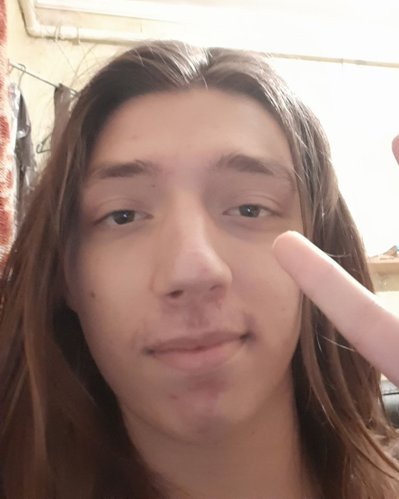

Про себе
Мене звуть Добриня Галкін. Я цікавлюся програмуванням та геймдизайном. На даний момент я вивчаю front-end розробку а також мову програмування java.
Також в мене є ютуб канал, який я намагась розвивати паралельно з навичками програмування. Канал ведеться українською мовою (але у більшості відео є англійські субтитри). Ось огляди на дві мої улюблені гри!
Мої проєкти
Мисливці
Візуальна новела зроблена на Html та JavaScript. Візьміть на себе роль голови мисливців на магію, керуйте гільдією та вирішайте яке місце повинна займати магія у суспільстві.